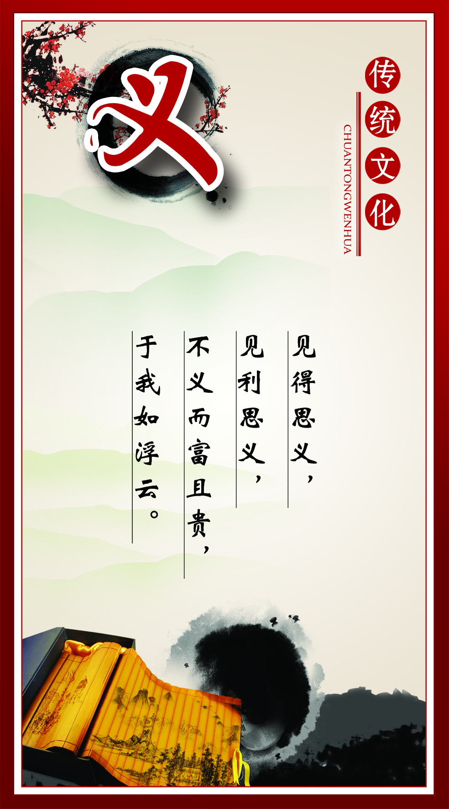

中国网东盟3月29日讯 3月28日，2018·礼仪东方第14届中国-东盟礼仪大赛系列活动在南宁启动。这标志着广西以更加开放、自信，礼行天下，让礼仪文化交流成为“共建21世纪海上丝绸之路，构建中国-东盟创新共同体”，积极融入国际舞台的礼仪文化先锋。
文化自信
文化是一个国家、一个民族的灵魂。文化兴国运兴，文化强民族强。没有高度的文化自信，没有文化的繁荣兴盛，就没有中华民族伟大复兴。
文化兴国
文化兴国
文化强国

四个自信
文化自信是“更基础、更广泛、更深厚的自信”
文化是一个国家、一个民族的灵魂。古往今来，世界各民族都无一例外受到其在各个历史发展阶段上产生的精神文化的深刻影响。
查看更多四个自信
文化自信是“更基础、更广泛、更深厚的自信”。
文化是一个国家、一个民族的灵魂。古往今来，世界各民族都无一例外受到其在各个历史发展阶段上产生的精神文化的深刻影响。 习近平指出：“历史和现实都表明，一个抛弃了或者背叛了自己历史文化的民族，不仅不可能发展起来，而且很可能上演一幕幕历史悲剧。” 今天，我们要进行伟大斗争、建设伟大工程、推进伟大事业、实现伟大梦想，都离不开文化所激发的精神力量。而要继承好、发展好自身文化，首先就要保持对自身文化理想、文化价值的高度信心，保持对自身文化生命力、创造力的高度信心。 这就是习近平提出“文化自信”这一时代课题的深意所在。 党的十八大指出，全党要坚定道路自信、理论自信、制度自信，对全党全国各族人民精神状态提出新的要求。 中国特色社会主义道路、中国特色社会主义理论体系和中国特色社会主义制度，精神源头是5000多年文明发展中孕育的中华优秀传统文化，是党和人民伟大斗争中孕育的革命文化和社会主义先进文化，积淀着中华民族最深层的精神追求，代表着中华民族独特的精神标识。习近平强调：“我们要坚定中国特色社会主义道路自信、理论自信、制度自信，说到底是要坚持文化自信。” 2016年7月，在庆祝中国共产党成立95周年大会上，习近平指出，“文化自信，是更基础、更广泛、更深厚的自信”，强调“坚持不忘初心、继续前进，就要坚持中国特色社会主义道路自信、理论自信、制度自信、文化自信”。 习近平提出“四个自信”，突出强调文化自信“更基础、更广泛、更深厚”的地位，为不断把中国特色社会主义伟大事业推向前进注入了更基本、更深沉、更持久的力量。

-
日前，2017年度梧州市“十大文化事件”评选揭晓，梧州日报社策划推出大型史实主题系列报道《梧州城演义——梧州建城2200年史记》、电影《天各一方》获国内外多个奖项等事项入选。
本次评选于今年3月份启动，全市机关事业单位、人民团体和各县（市、区）共推荐参评事件52件。经过初步审核和择优遴选，主办方共确定20件候选事件，制作网络专题专栏进行展示、投票。综合公众投票情况，专家评审组对入围的候选事件进行评审，最终确定梧州市2017年度“十大文化事件”。 -
“没有高度的文化自信，没有文化的繁荣兴盛，就没有中华民族伟大复兴。”习近平同志在党的十九大报告中向全党全国人民发出了“坚定文化自信，推动社会主义文化繁荣兴盛”的伟大号召。 有些时刻，必将载入史册。“喜讯传到壮乡来，歌满象江情满怀……”在两千多公里外的壮乡，象州县素有“歌王”之称的廖引帮专门创作了一首山歌，表达对十九大胜利召开的喜悦之情。 如何在新时代里，以高度的文化自信，为人民服务、为社会主义服务，铸就中华文化新辉煌？连日来，在北京出席十九大的广西代表也在交流与讨论中凝聚共识，在思考和展望中凝聚力量。
-
党的十八大以来，习近平总书记曾在多个场合提到文化自信。文化自信，说到底就是对中国传统文化——中华民族精神家园的自信。中华文化源远流长，积淀着中华民族最深层的精神追求，代表着中华民族独特的精神标识，为中华民族生生不息、发展壮大提供了丰厚滋养。不忘本才能开辟未来，善于继承才能更好创新。我国自古以来就是一个多民族国家，历史上各民族虽然有矛盾和冲突，但是和睦相处、友好往来、互相学习是民族关系的主流，共同创造了光辉灿烂的中华文明。随着改革开放后中国的和平崛起和西方发展遇到难题，如今，许多西方国家在反思中探讨中华传统文化中讲仁爱、重民本、守诚信、崇正义、尚和合、求大同等思想的时代价值，出现“中华文化热”“孔子热”“汉语热”，非常值得国人深思。我们更应坚定文化自信，在助力广西文化繁荣发展方面有新的作为。
© Copyright 2018 by Guangxi University La Cheerleading. All Rights Reserved.